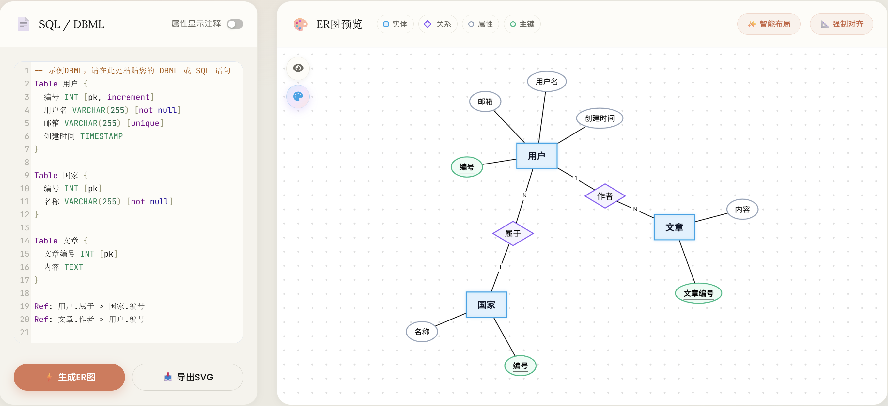

基于 Chen 模型的在线 SQL / DBML 转换器。所有解析都在你的浏览器里发生，不上传、不登录、不计费。
解析在你的浏览器里完成，SQL 不会被上传到任何地方。
粘贴 CREATE TABLE 或 DBML Ref，自动识别并生成 Chen 模型。
节点可拖动，双击即可改名字，不用回到源代码反复生成。
代码完全开源，支持导出图片，欢迎 fork、提 issue、发 PR。
切换标签看看不同格式，点「复制」然后粘到生成器里。
CREATE TABLE users (
id INT PRIMARY KEY,
username VARCHAR(255) NOT NULL,
email VARCHAR(255) UNIQUE
);
CREATE TABLE posts (
id INT PRIMARY KEY,
author_id INT,
title VARCHAR(255),
FOREIGN KEY (author_id) REFERENCES users(id)
);Table users {
id INT [pk]
username VARCHAR(255) [not null]
email VARCHAR(255) [unique]
}
Table posts {
id INT [pk]
author_id INT
title VARCHAR(255)
}
Ref: posts.author_id > users.id在线使用，或本地运行 Vite 开发服务器。
SQL 或 DBML 都行，编辑器带语法高亮。
右侧立刻出现 Chen 模型可视化。
拖节点、双击改名、滚轮缩放。
复杂图形一键整理，几秒排整齐。
npm run dev
，再访问 Vite 输出的 /sql2er.html 地址。
对应数据库中的表
对应表之间的外键关系
对应表中的列
标识该属性为主键

不会。工具完全是纯前端的，所有 SQL 解析都在你的浏览器里完成。没有后端、没有日志，你粘贴的代码永远不会离开这个页面。
为了自动化，工具默认用外键字段名作为菱形的标签，用表名 / 列名作为实体 / 属性。学术作业请双击图形改名，或改源 SQL 再重新生成。
源码需要 Vite 编译 TypeScript 和解析 npm 依赖。请执行
npm install && npm run dev，然后访问 Vite 输出的
/sql2er.html 地址。静态部署请先
npm run build，再服务 dist/。
解析以 PostgreSQL 方言为主，同时兼容常见的 MySQL / SQLite CREATE TABLE 语法。外键无论写在列里还是尾部约束里都能识别。
浏览器里就能跑，不用注册，不用付费。
打开生成器